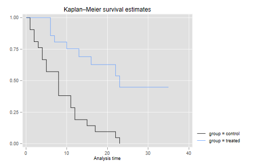
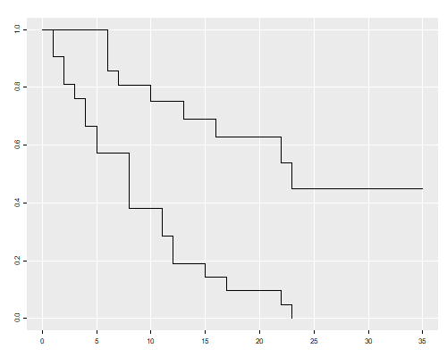
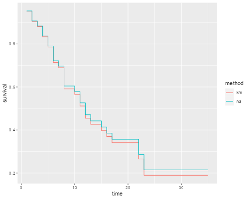

The datasets page has a copy of the Gehan survival data, which were analyzed by Cox in his original proportional hazards paper. The data shows the length of remission in weeks for two groups of leukemia patients, treated and controls, click here for more information.
We analyze the data using R and Stata, using the Kaplan-Meier and Nelson-Aalen estimates of the survival function and the Mantel-Haenszel test to compare survival curves.
{% include srtabs.html %}As usual, the first task is to read the data. We
also stset them and label the groups.
. clear
. infile group weeks relapse using ///
> https://grodri.github.io/datasets/gehan.raw
(42 observations read)
. label define group 1 "control" 2 "treated"
. label values group group
. stset weeks, failure(relapse)
Survival-time data settings
Failure event: relapse!=0 & relapse<.
Observed time interval: (0, weeks]
Exit on or before: failure
──────────────────────────────────────────────────────────────────────────
42 total observations
0 exclusions
──────────────────────────────────────────────────────────────────────────
42 observations remaining, representing
30 failures in single-record/single-failure data
541 total analysis time at risk and under observation
At risk from t = 0
Earliest observed entry t = 0
Last observed exit t = 35
> gehan <- read.table("https://grodri.github.io/datasets/gehan.dat")
> library(dplyr)
> summarize(gehan, events = sum(relapse), exposure = sum(weeks))
events exposure
1 30 541
As you can see, 30 of the 42 patients had a relapse, with a total observation time of 541 weeks. The weekly relapse rate is 7.8%.
The Kaplan-Meier estimators for the two groups are easily plotted using sts graph with the
by(group) option. computed using
survfit in the survival package and plotted using the
generic function plot(), called via my own
ggfy() to make the plot look a bit like
ggplot.
. set scheme plottig
. sts graph, by(group)
Failure _d: relapse
Analysis time _t: weeks
. graph export kmg.png, width(500) replace
file kmg.png saved as PNG format
> library(survival)
> kmg <- survfit(Surv(weeks, relapse) ~ group, data=gehan)
> source("https://grodri.github.io/survival/ggfy.R")
> png("kmgr.png", width=500, height=400)
> ggfy(kmg) # or call plot(kmg) directly
> dev.off()
null device
1
 
This shows that after 23 weeks all patients in the control group had relapsed, but about half those in the treated group remained in remission. This reproduces Figure 1 in the notes.
We can list the estimates using sts list. the
summary() method.
. sts list, by(group)
Failure _d: relapse
Analysis time _t: weeks
Kaplan–Meier survivor function
By variable: group
At Net Survivor Std.
Time risk Fail lost function error [95% conf. int.]
────────────────────────────────────────────────────────────────────────
control
1 21 2 0 0.9048 0.0641 0.6700 0.9753
2 19 2 0 0.8095 0.0857 0.5689 0.9239
3 17 1 0 0.7619 0.0929 0.5194 0.8933
4 16 2 0 0.6667 0.1029 0.4254 0.8250
5 14 2 0 0.5714 0.1080 0.3380 0.7492
8 12 4 0 0.3810 0.1060 0.1831 0.5778
11 8 2 0 0.2857 0.0986 0.1166 0.4818
12 6 2 0 0.1905 0.0857 0.0595 0.3774
15 4 1 0 0.1429 0.0764 0.0357 0.3212
17 3 1 0 0.0952 0.0641 0.0163 0.2612
22 2 1 0 0.0476 0.0465 0.0033 0.1970
23 1 1 0 0.0000 . . .
treated
6 21 3 1 0.8571 0.0764 0.6197 0.9516
7 17 1 0 0.8067 0.0869 0.5631 0.9228
9 16 0 1 0.8067 0.0869 0.5631 0.9228
10 15 1 1 0.7529 0.0963 0.5032 0.8894
11 13 0 1 0.7529 0.0963 0.5032 0.8894
13 12 1 0 0.6902 0.1068 0.4316 0.8491
16 11 1 0 0.6275 0.1141 0.3675 0.8049
17 10 0 1 0.6275 0.1141 0.3675 0.8049
19 9 0 1 0.6275 0.1141 0.3675 0.8049
20 8 0 1 0.6275 0.1141 0.3675 0.8049
22 7 1 0 0.5378 0.1282 0.2678 0.7468
23 6 1 0 0.4482 0.1346 0.1881 0.6801
25 5 0 1 0.4482 0.1346 0.1881 0.6801
32 4 0 2 0.4482 0.1346 0.1881 0.6801
34 2 0 1 0.4482 0.1346 0.1881 0.6801
35 1 0 1 0.4482 0.1346 0.1881 0.6801
────────────────────────────────────────────────────────────────────────
Note: Net lost equals the number lost minus the number who entered.
> summary(kmg)
Call: survfit(formula = Surv(weeks, relapse) ~ group, data = gehan)
group=control
time n.risk n.event survival std.err lower 95% CI upper 95% CI
1 21 2 0.9048 0.0641 0.78754 1.000
2 19 2 0.8095 0.0857 0.65785 0.996
3 17 1 0.7619 0.0929 0.59988 0.968
4 16 2 0.6667 0.1029 0.49268 0.902
5 14 2 0.5714 0.1080 0.39455 0.828
8 12 4 0.3810 0.1060 0.22085 0.657
11 8 2 0.2857 0.0986 0.14529 0.562
12 6 2 0.1905 0.0857 0.07887 0.460
15 4 1 0.1429 0.0764 0.05011 0.407
17 3 1 0.0952 0.0641 0.02549 0.356
22 2 1 0.0476 0.0465 0.00703 0.322
23 1 1 0.0000 NaN NA NA
group=treated
time n.risk n.event survival std.err lower 95% CI upper 95% CI
6 21 3 0.857 0.0764 0.720 1.000
7 17 1 0.807 0.0869 0.653 0.996
10 15 1 0.753 0.0963 0.586 0.968
13 12 1 0.690 0.1068 0.510 0.935
16 11 1 0.627 0.1141 0.439 0.896
22 7 1 0.538 0.1282 0.337 0.858
23 6 1 0.448 0.1346 0.249 0.807
The convention is to list the survival function immediately after each time. In the control group there are no censored observations, and the Kaplan-Meier estimate is simply the proportion alive after each distinct failure time. You can also check that the standard error is the usual binomial estimate. For example just after 8 weeks there are 8 out of 21 alive, the proportion is 8/21 = 0.381 and the standard error is √0.381(1 - 0.381)/21) = 0.106.
In the treated group 12 cases are censored and 9 relapse. Can you compute the estimate by hand? Only the distinct times of death –6, 7, 10, 13, 16, 22 and 23– are relevant. The counts of relapses are 3, 1, 1, 1, 1, 1, 1. When there are ties between event and censoring times, it is customary to assume that the event occurred first; that is, observations censored at t are assumed to be exposed at that time, effectively censored just after t. The counts of censored observations after each death time (but before the next) are 1, 1, 2, 0, 3, 0 and 5. When the last observation is censored, the K-M estimate is greater than zero, and is usually considered undefined from that point on.
We can also compute the Nelson-Aalen estimate of the cumulative
hazard, and then exponentiate minus the cumulative hazard to obtain an
alternative estimate of the survival function. Stata’s sts list can compute the Nelson-Aalen
estimate using the na option, and sts generate
can save either estimate in a new variable as shown below. In R we can estimate the cumulative hazard “by hand” using
counts of events and exposure.
. sts generate kmS = s . sts generate naH = na . gen naS = exp(-naH) . twoway (line kmS _t, c(J) sort) (line naS _t, c(J) sort) . graph export kmna.png, width(500) replace file kmna.png saved as PNG format
> sf <- survfit(Surv(weeks, relapse) ~ 1, data = gehan)
> d <- data.frame(time = sf$ time, km = sf $surv,
+ na = exp(-cumsum(sf$n.event / sf$n.risk)))
> dl <- reshape(d, direction="long", idvar="time", timevar="method",
+ v.names="survival", varying=c("km","na")) %>%
+ mutate(method = factor(method, labels=c("km","na")))
> library(ggplot2)
> ggplot(dl, aes(time, survival, color=method)) + geom_step()
> ggsave("kmnar.png", width=500/72, height=400/72, dpi=72)

The two estimates are very similar.
To test equality of survival curves in the two groups we can use the
Mantel-Haenszel or log-rank test, available in the
sts test command with the default logrank
option. via the survdiff
function.
. sts test group
Failure _d: relapse
Analysis time _t: weeks
Equality of survivor functions
Log-rank test
│ Observed Expected
group │ events events
────────┼─────────────────────────
control │ 21 10.75
treated │ 9 19.25
────────┼─────────────────────────
Total │ 30 30.00
chi2(1) = 16.79
Pr>chi2 = 0.0000
> survdiff(Surv(weeks, relapse) ~ group, data = gehan)
Call:
survdiff(formula = Surv(weeks, relapse) ~ group, data = gehan)
N Observed Expected (O-E)^2/E (O-E)^2/V
group=control 21 21 10.7 9.77 16.8
group=treated 21 9 19.3 5.46 16.8
Chisq= 16.8 on 1 degrees of freedom, p= 4e-05
We see that the treated have fewer deaths than would be expected (and thus the controls have more) if the two groups had the same survival distribution: 9 instead of 19.25. The Mantel-Haenszel chi-squared statistic of 16.8 on one d.f. is highly significant.
It is instructive to compute this statistic “by hand”.
The Mantel-Haenszel test is just one of several test statistics that we could use. There is a family of test based on a comparison of observed and expected counts at each distinct failure time, which differ in terms of the weights assigned to each time as shown in the table below
| Name | Weight |
|---|---|
| Mantel-Haenszel | 1 |
| Wilcoxon | ni |
| Tarone-Ware | √ni |
| Peto-Peto-Prentice | S(ti) |
| Fleming-Harrington | S(ti)p (1-S(ti))q |
The most popular of these is the Wilcoxon test -actually an extension
of Wilcoxon’s well-known non-parametric test- proposed by Gehan and
Breslow, which gives more weight to early failures. Stata can compute all four using the options
wilcoxon, tware, peto and
fh(p, q). R implements three using a
parameter rho (p in our notation), with
rho=0 for log-rank, rho=1 for Peto-Peto, and
rho=p for Fleming-Harrington with q=1.
The tests using the survival as weight treat it as left-continuous.